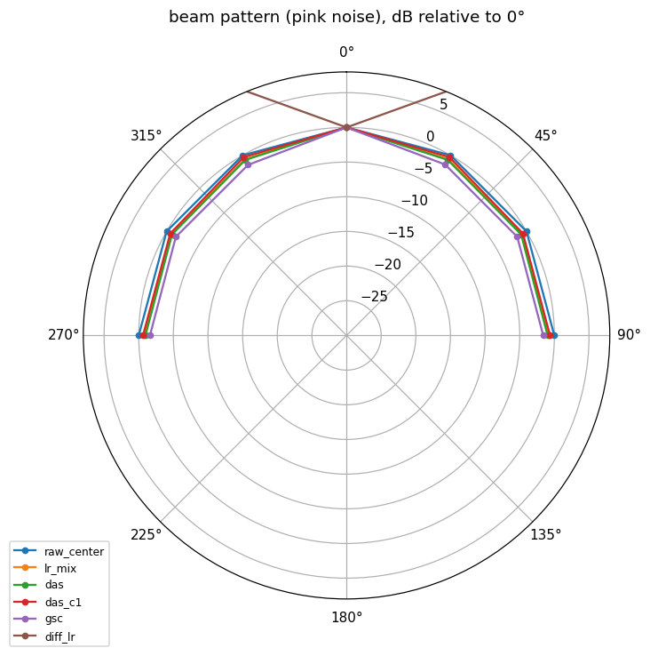
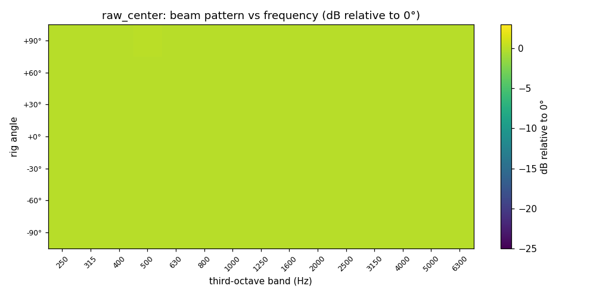
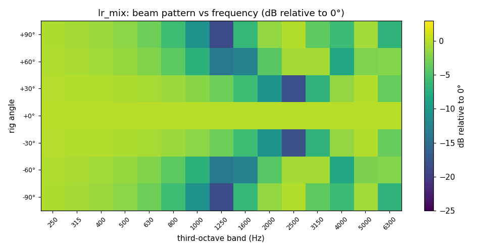
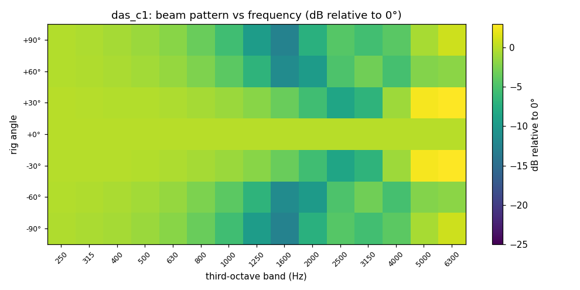
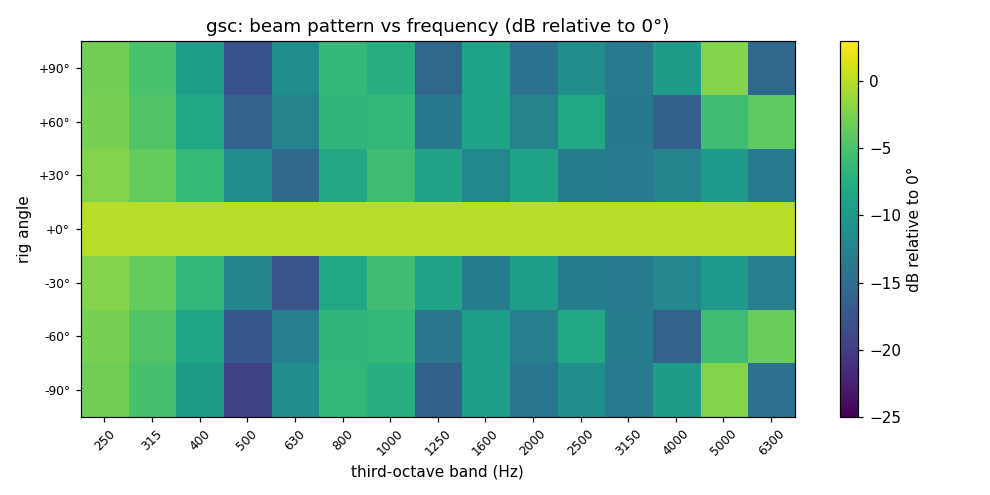
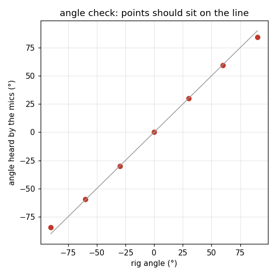

7 tests. Angles: [-90, -60, -30, 0, 30, 60, 90]. Distances: [60]. Environments: ['quiet'].
Best so far: gsc (score 9.91). See the scoring notes at the bottom.
| path | score | side_rejection | di_estimate | snr_front | snr_side_mean | front_level | angles |
|---|---|---|---|---|---|---|---|
| gsc | 9.91 | 1.58 | 1.31 | 28.04 | 19.71 | -27.97 | 7 |
| lr_mix | 1.66 | 0.81 | 0.64 | 23.93 | 23.08 | -27.94 | 7 |
| das | 1.64 | 0.93 | 0.74 | 25.76 | 25.05 | -27.96 | 7 |
| das_c1 | 1.25 | 0.61 | 0.43 | 25.7 | 25.06 | -28.27 | 7 |
| das_c2 | 0.89 | 0.39 | 0.27 | 23.7 | 23.21 | -28.42 | 7 |
| raw_right | 0.02 | 0.0 | -0.0 | 20.92 | 20.9 | -27.91 | 7 |
| raw_left | 0.01 | -0.0 | -0.0 | 20.91 | 20.9 | -27.91 | 7 |
| raw_center | -0.01 | 0.0 | 0.0 | 20.9 | 20.91 | -27.91 | 7 |
| diff_lr | -30.74 | -14.51 | -13.62 | 0.28 | 16.51 | -50.0 | 7 |









| run | angle | dist | env | heard at | warnings |
|---|---|---|---|---|---|
| 2026-10-21_103955_anglem090_distance060cm_quiet | -90 | 60 | quiet | -84° | |
| 2026-10-21_103957_anglem060_distance060cm_quiet | -60 | 60 | quiet | -59° | |
| 2026-10-21_104000_anglem030_distance060cm_quiet | -30 | 60 | quiet | -30° | |
| 2026-10-21_104002_angle000_distance060cm_quiet | 0 | 60 | quiet | +0° | |
| 2026-10-21_104004_angle030_distance060cm_quiet | 30 | 60 | quiet | +30° | |
| 2026-10-21_104007_angle060_distance060cm_quiet | 60 | 60 | quiet | +59° | |
| 2026-10-21_104009_angle090_distance060cm_quiet | 90 | 60 | quiet | +84° |
(all dB, computed on the same recordings):
front_level noise level at 0°
side_rejection front level minus the mean level at |angle| >= 45° (higher is better)
di_estimate directivity index from the polar (higher is better)
snr_front speech SNR at 0° (higher is better)
snr_side_mean mean speech SNR at |angle| >= 45° (LOWER is better:
a talker at the side
should not get through)
score side_rejection + (snr_front - snr_side_mean)